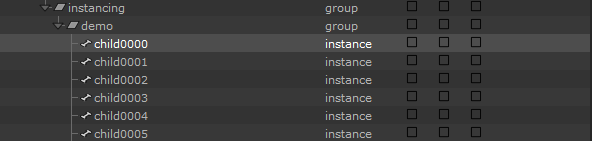
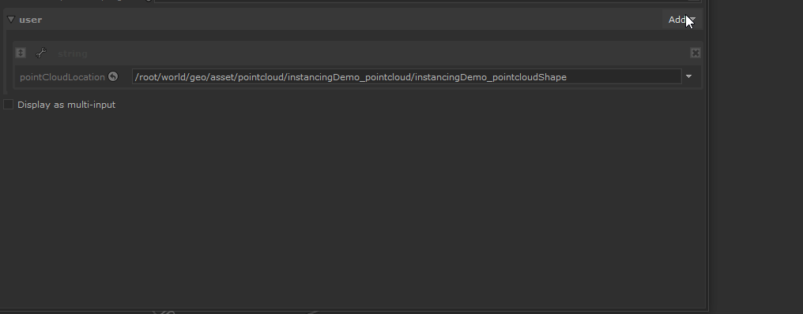
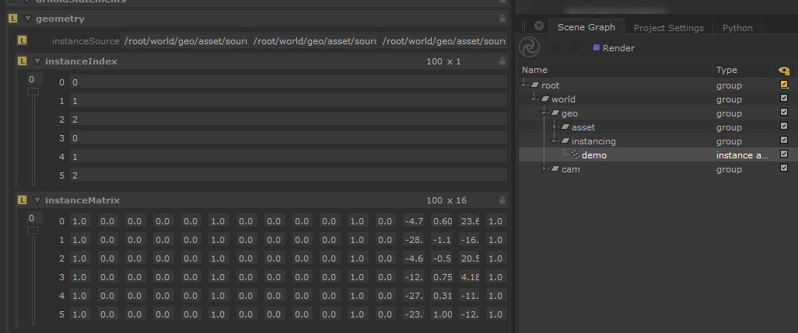

Instancing in Katana
Katana, as usual, doesn't offer a "ready to go" solution for instancing.
This initial complexity can be overcome by the fact that we can create an
instancing solution that exactly suits our needs. And that is what we
are going to address in this post.
Additionally, I will explain how I tried to create a flexible solution for
instancing called KUI so you don't have to !
Disclaimer
My explanations reflect the experience I had with this subject and may not be accurate in other production contexts. Be sure to contact me if you spot big mistakes / things to improve.
Target Audience
This post is targeted towards beginners with Katana itself.
If you are a more advanced user you can check Katana Uber Instancing.
2025 Note
USD, which is not mentioned on this page, is also a solution to build instancing in Katana and might be worth looking at.
Intro
As Katana's motto states : It’s all just a bunch of Attributes. And it
applies to instances too. They are just a bunch of locations with a defined
list of attributes understood by your render-engine.
You can as such create an instance with a simple
LocationCreate + AttributeSet setup (if you have time to lose). But we
will be using OpScripts to do so.
Here is a quick diagram that could resume how an instance is built :
The basic principle is that an instance links at least to one
instance source (a scene-graph location).
The instance will create a "copy" of this instance source. You can then set
transformations override that will allow the instance to have a different
position, rotation, etc, than the source.
Additional attributes can also be set and used for shading to make the
instance even more different than the source.
Instancing Methods
Instancing comes in different flavors, that, similarly to all things, have specific ups and downs. Your render-engine may also supply alternative ways to produce instances so be sure to check its documentation on the topic.
Here is what the Katana documentation say about this:

Leaf-level
(Never used this one)
The Katana documentation is pretty explicit.
cons
Major drawback is that you can't have a location with children locations (to verify), and well it seems every render-engine has a way to decide which location is the first one to instance 🙂.
pros
You just have to set a single attribute.
You can easily apply modification on a single instance. (ex: a Transform3D)
Would love to know in what case this one can be more pertinent than the other methods.
Hierarchical
Each instance = one scene-graph location.
cons
Too many instances (>~250 000) will lead you to performances issues. (pre-render)
pros
You can easily apply modification on a single instance. (ex: a Transform3D)
Array
One single scene-graph location where each instance correspond to an index on each attribute.
cons
Complicated to get per-instance override.
pros
Better performances.
And there is probably some additional pro/cons inherent to your render-engine
so again, check the documentation, and test stuff.
(For example, when I started to explore instancing, Redshift was not supporting
locations with children when using the array method (not the case
anymore).)
Instancing in Practice
To start, there is a nice small example on the
official Katana documentation
. It explains how to create instances using mostly Katana nodes and one small
OpScript to avoid stacking numerous AttributeSet nodes.
This approach is pretty basic: we manually set how many instances we want to
create and we need to manually move them. The setup also
takes time to build and is not very scalable.
A more widely used solution depends on point-clouds: a type of location
composed of visual abstract "points" in the 3d space that can hold an
arbitrary number of attributes based on the point index.
You use each individual point's attribute to create an instance. For example, each point can specify what kind of instance source it is representing, ... Furthermore, its "abstract" aspect makes it very convenient for transferring data between DCCs.
A convenient way to create scene graph locations based on a source object like a point-cloud, is to use the OpScript feature. It is an entry door to use scripting while staying in the Katana nodegraph system. Usage of OpScript require to learn the lua language. But don't worry, if you don't want to get your hands dirty you will be able to use a premade script/node shared in the Katana Uber Instancing section.
To create scene graph locations we need to know how they must be structured. For this what's better than having a look at the documentation : AttributesConventions/Instancing. You notice that we find the 3 instancing methods described again.
Let's now start building the scene.
Scene-Preparation
For you to follow the tutorial, I will be providing you a few assets. Actually only a point-cloud, as to keep it simple, instances sources will be primitives.
You can also download the pointcloud used in KUI for testing.
This point-cloud has been generated from Mash (see mash2pointcloud) and contains the most commonly used attributes.
Here is what it looked like in Maya :
And here is the instances-sources mapping list :
0: cube
1: cone
2: sphere
Here it is imported in Katana :
I also used a small OpScript that allow me to set the viewer size of the points. You can grab the OpScript here.
In the Attributes tab we can see what are the attributes stored on the
point-cloud. This one has :
-
arbitraryscale: XYZ per-point scale attribute.rotation: XYZ per-point rotation attributeobjectIndex: per-point index to use for instance-sourcecolorRandom: per-point random color
-
pointP: XYZ per-point transformv: per-point velocitywidth: added via the OpScript for viewer size.
All the attributes in the arbitrary section don't have a naming
convention. You must know which name corresponds to which type of data for when
you are creating the OpScript that produce the instances.
PointCloud Instancing without OpScript
Depending on your render-engine , it might actually support directly
rendering the point-cloud and generating the instances on the fly !
Like Arnold does as explained here.
But it excepts specific attributes in the point group.
For the instance-sources we will be using simple primitives as detailed above.
You can use PrimitiveCreate node to create them. My final "initial"
nodegraph is looking like this :
Now it's time to have a look at OpScripting.
OpScript-Preparation
We are going to manipulate a lot of inputs and data and at some point, we
will need to see what X variable is equal to, what is the result of X
operation, etc to just be able to know where we need to go scripting-wise. Usually,
this is done by using the print() function. But this is very basic and can lead to
various limitations.
To have a more robust way of debugging OpScripts I made myself a small logging module in lua. Kind of similar to what Python logging module does. It adds a bunch of line to your script but will allow more flexibility in the way data will be displayed to you.
Have a look at this repository to install the llloger module :

All instructions are specified in the documentation so I have not much to explain here.
We will then be able to use the logger methods to output messages to the
console. (This just wrap the print() function which in Katana, output the
result in the console that should be opened alongside your Katana)
logger:debug("any object")
logger:info("any object")
logger:warning("any object")
logger:error("any object")
All these steps are not mandatory for this tutorial. They just help for
faster debugging. (And pertinent if you want to write lua code by yourself.)
Though, the llloger module is required for KUI to work, so if you plan
to use it, you will need to install it anyways.
And by the way, if this is your first time with OpScript, the documentation can be a bit confusing at first. It is split into multiple "modules" with different language bindings. The one we use the most often is the CookInterface :
Basic Instancing : Hierarchical
For a first try, we will be using the OpScript provided on the Foundry's documentation. It's the most basic you can do which will be perfect for an introduction. It's the one for the hierarchical method.
Create an OpScript node and paste the bottom script inside the script.lua
parameter
--[[
source: https://support.foundry.com/hc/en-us/articles/360006999279
]]
-- Read op arguments
local instanceSourceLocation = Interface.GetOpArg("user.instanceSourceLocation"):getValue()
local pointCloudLocation = Interface.GetOpArg("user.pointCloudLocation"):getValue()
if Interface.AtRoot() then
-- Read the point cloud
local points = Interface.GetAttr("geometry.point.P", pointCloudLocation)
-- ignore the other samples so no motion blur !
points = points:getNearestSample(0.0)
-- Loop over points
local x, y, z
local gb = GroupBuilder()
for i=0, #points/3 - 1 do
x = points[3*i+1]
y = points[3*i+2]
z = points[3*i+3]
-- Build op arguments for the child location
gb:update(Interface.GetOpArg())
gb:set("childAttrs", Interface.GetAttr("", instanceSourceLocation))
gb:set("childAttrs.type", StringAttribute("instance"))
gb:set("childAttrs.geometry.instanceSource", StringAttribute(instanceSourceLocation))
-- note: we shouldn't use `xform.interactive` as originaly specified.
gb:set("childAttrs.xform.group0.translate", DoubleAttribute({x, y, z}))
-- Create the child
Interface.CreateChild(
string.format("child%04d", i),
Interface.GetOpType(),
gb:build()
)
end
else
local childAttrs = Interface.GetOpArg("childAttrs")
for i=0, childAttrs:getNumberOfChildren()-1 do
Interface.SetAttr(childAttrs:getChildName(i), childAttrs:getChildByIndex(i))
end
end
If you look at the first lines you can see that we are getting some
OpArg values. On OpScript nodes this corresponds to user parameters.
This means we will need to create two of them.

You should have noticed the first script's limitation, we can only give one
instance-source for now. But let's keep that for later. Set the 2 created user
parameters values with their corresponding locations. (! the pointcloud is the
location of type pointcloud, not its parent "group".)
We need to provide one last input, the target destination for our instances. For this,
change the applyWhere parameter to atSpecificLocation and then in the location
param at the top, submit the desired target location for your instances.
I will be using /root/world/geo/instancing/demo.
Now let's view the OpScript node, and expand the target location in the SceneGraph to see our instances.

Instances preview in the Viewer
Since Katana 4.5, it is now possible to view instances in the Viewer. Have a look at the Instances preview in the Viewer section.
Yay, that was quick to have something working. But check the Attributes on one of the instance.
If you have a look at the xform.interactive attributes, we can see that
only the translate attribute has non-default values. This is because our
current OpScript only read the P attribute on the point-cloud which
correspond to the instance translations.
You can notice that all the geometry attributes from the instance-source
have also been copied. This is because the script copies all the root
attributes of the instance-source :
gb:set("childAttrs", Interface.GetAttr("", instanceSourceLocation))
This would allow having the bounds attribute on the instance, so we have at
least some primitive representation in the viewer. But the geometry
attributes are not needed because they are copied from the instance-source
at render-time. To fix this, the instance-source location would need to be a
group with the mesh inside.
Now, what we should not forget, is cleaning the scene for rendering. This means :
-
Hide the pointcloud (cause you render-engine will probably render the points as spheres). You can use a
VisibilityAssignnode for this. -
Hide the instances-sources. This can be graciously done by setting the type of the instance-source location to
instance source. You can use anAttributeSetnode for this.
Setting a location type to instance source will make it invisible in
the viewer, in the render and allow to preview the instances in the viewer
(with Katana >= 4.5).
Annnnd, we can try to fire up a render to see our instancing result. Nothing very exciting, using primitives doesn't look very impressive. You can have a try with any asset, just instance it's top-most location. Here is the result with a "heavy" asset :

And if you need it, here is the Katana file :
Basic Instancing : Array
Before trying to go further with hierarchical we are going to have a look at
the array method. Keep the same scene, we will only need to change the
OpScript.
And here it is. It's a slightly modified version from the one on Foundry's website. (better readability + bugs fixed)
--[[
source: https://support.foundry.com/hc/en-us/articles/360006999239
]]
-- Read the op arguments
local instanceSourceLocations = Interface.GetOpArg("user.instanceSourceLocations")
local pointCloudLocation = Interface.GetOpArg("user.pointCloudLocation"):getValue()
-- Read the point cloud's points
local pointAttr = Interface.GetAttr("geometry.point.P", pointCloudLocation)
local points = pointAttr:getNearestSample(Interface.GetCurrentTime())
-- declare variable used to build the final instance
-- The indexArray attribute determines which instance source each instance location represents
local indexArray = {}
local matrixArrayMap = {}
--[[---------------------------------------------------------------------------
PROCESS instance source attribute
]]
-- for each instance create an instance index
for i=0,#points/3-1 do
-- For this example, the instances are arbitrarily assigned to an
-- instance source
-- a more stable apporach would be to use an arbitrary attribute
-- on the point cloud to assign an instance source
indexArray[#indexArray+1] = i%instanceSourceLocations:getNumberOfTuples()
end
--[[---------------------------------------------------------------------------
PROCESS MATRIX ATTRIBUTE
]]
-- Get the transforms from the points
local numTimeSamples = pointAttr:getNumberOfTimeSamples()
local matrixArray
local workMatrix
local sampleTime
local pointSample
local x, y, z
-- to get motion blur on the instances, create an instanceMatrix at each
-- time sample available from the point cloud points attribute
for idx=0,numTimeSamples-1 do
sampleTime = pointAttr:getSampleTime(idx)
pointSample = pointAttr:getNearestSample(sampleTime)
-- each instance in array has its own matrix
matrixArray = {}
workMatrix = Imath.M44d():toTable()
-- for each instance build a matrix with a mocked up transformation
for i=0,#pointSample/3-1 do
-- grab the points that represent this instance
x = pointSample[3*i+1]
y = pointSample[3*i+2]
z = pointSample[3*i+3]
-- set the translate of the matrix to the points in the point cloud
workMatrix[13] = x
workMatrix[14] = y
workMatrix[15] = z
for j = 1,16 do
matrixArray[#matrixArray+1]=workMatrix[j]
end
end
matrixArrayMap[sampleTime] = matrixArray
end
--[[---------------------------------------------------------------------------
Build the array instance
]]
-- Create a single location which will generate an array of instances
-- Set type for this location to 'instance array'
Interface.SetAttr('type', StringAttribute('instance array'))
-- This instance array location must point to the instance source locations
-- through the attribute 'geometry.instanceSource'
Interface.SetAttr('geometry.instanceSource', instanceSourceLocations)
-- Set index for instance array element
Interface.SetAttr('geometry.instanceIndex', IntAttribute(indexArray, 1))
Interface.SetAttr('geometry.instanceMatrix', DoubleAttribute(matrixArrayMap, 16))
You still need to create 2 user parameters on the OpScript node, but
this time user.instancesSourceLocations must be a string array of scene
graph-locations.

And of course the same user.pointCloudLocation one. The location
parameter still define where the instance is created but this time it's not
the group holding the instances, but directly the full location of the instance
(array instance is only one scene-graph location).
Make sure the OpScript is running and then check the attribute on the
instance array location created.

This time we can use our different instance-sources thanks to the
InstanceIndex attribute that specify which instance-source to use per
point. But if we look more closely at the OpScript lua script, we notice the
index are generated mathematically instead of using our point-cloud's
objectIndex attribute. This will need to be addressed later of course.
We can also notice that we are not using the traditional "translate" attribute, but a matrix one. Matrices have the advantages of replacing 5 attributes with 1 (translations, rotations(X, Y, Z), scale) but are harder to modify "on-the-fly". In the end choose what suits you best for your workflow.
To know what kind of attributes are supposed to be supported by each instancing method, we can have a look at the documentation:
Only the Array method require specific attributes as all instances are represented by one scene-graph location.
Full Instancing
Aight' that was a quick first look at instancing, but as mentioned, we were not using all the exported attributes on our point-cloud. Supporting them requires extending the basics OpScripts we used but this will be too long for this blog-post. Instead, I'm just going to give the code logic you could be using if you want to go down that road. Else you will find a fully working solution in the Katana Uber Instancing section 😉.
Full Instancing : Hierarchical
Hierarchical is using single location per-instance, they can use the commonly
used attributes for locations like xform. This transformation attributes
are described in the docs : dev-guide/AttributeConventions/Transformations.
So pretty easy to implement, in pseudocode :
-- this is "pseudo-code", not usable as it is.
local points = ...
local translate_attr = ...
local rotate_attr = ...
local scale_attr = ...
local out_translate
local out_rotateX
local out_rotateY
local out_rotateZ
local out_scale
local instance
-- points is divided by 3 cause it has `num point * XYZ`
-- in lua we start counting at 1 but we need the `i` to start at 0 to correctly
-- gather each point index. As we start at 0 we remove 1 to compensate.
for i=0, #points/3 -1 do
instance = GroupBuilder()
out_translate = {points[3*i+1], points[3*i+2], points[3*i+3]}
-- as stated in the doc, rotations need to define axis orientation.
out_rotateX = {rotate_attr[3*i+1], 1.0, 0.0, 0.0}
out_rotateY = {rotate_attr[3*i+2], 0.0, 1.0, 0.0}
--[...]
--[...]
instance:set("childAttrs.xform.group0.translate", out_translate)
instance:set("childAttrs.xform.group0.rotateZ", out_rotateX)
instance:set("childAttrs.xform.group0.rotateY", out_rotateY)
instance:set("childAttrs.xform.group0.rotateX", out_rotateZ)
instance:set("childAttrs.xform.group0.scale", out_scale)
Interface.CreateChild(
instance_name,
Interface.GetOpType(),
instance:build()
)
end
--[...]
In the code I wrote in the past, my target was xform.interactive but
this is wrong as the xform is not interactive like with a Transform3D ! You
should use xform.groupN convention instead.
Warning
Xform attributes are very sensitive :
-
You have to make sure the order is respected as followed :
translation rotationZ rotationY rotationX scale matrix -
You have to make sure all the above attributes are
DoubleAttributes. Else you might have surprises at render-time.
If you are now wondering who to determine which instanceSource to use, the logic is pretty simple :
-- this is "pseudo-code", not usable as it is.
local user_instance_sources = ...
local points = ...
local instance_index_attr = ...
local instance
local out_instance_source
local current_instance_index
for i=0, #points/3 -1 do
instance = GroupBuilder()
-- find which index the currently visited point corresponds to
current_instance_index = instance_index_attr[i+1]
-- The user_instance_sources had of course to be submitted in the proper
-- order to work.
-- (in lua, we start counting from 1, so if the above index returned start
-- at 0, we need to add 1.)
out_instance_source = user_instance_sources[current_instance_index + 1]
instance:set(
"childAttrs.geometry.instanceSource",
StringAttribute(out_instance_source)
)
--[...]
Interface.CreateChild(
instance_name,
Interface.GetOpType(),
instance:build()
)
end
--[...]
And you could then do the same for arbitrary attributes like colorRandom.
The only difference could be the target destination on the instance. You
must check your render-engine documentation for that, but usually, it's :
-- this is "pseudo-code", not usable as it is.
local random_color_attr = ...
local points = ...
local instance
local cr, cg, cb
for i=0, #points/3 -1 do
instance = GroupBuilder()
--[...]
cr = random_color_attr[3*i+1]
cg = random_color_attr[3*i+2]
cb = random_color_attr[3*i+3]
-- not gonna lie I don't really know what the scope does
instance:set(
"childAttrs.geometry.arbitrary.randomColor.scope",
StringAttribute("primitive")
)
-- inputType is important ! Depends on what node you use in the shading
-- network to get back the data. In Arnold this would be an `user_data_rgb`
instance:set(
"childAttrs.geometry.arbitrary.randomColor.inputType",
StringAttribute("color3")
)
instance:set(
"childAttrs.geometry.arbitrary.randomColor.value",
FloatAttribute({cr, cg, cb}, 3)
)
Interface.CreateChild(
instance_name,
Interface.GetOpType(),
instance:build()
)
end
--[...]
And finally just for ""educational"" purposes, here is the code I used on
a Redshift production. It's not that documented and code have a lot of
mistakes so use it at your own risk. Again I recommend instead having a look at
KUI.
Full Instancing : Array
Array is in a way more simple, you can just brainless copy the attributes from the point-cloud to the instance (if they are properly formatted). Make sure to check the documentation about what kind of attribute is expected. Pseudocode is looking like this :
-- this is "pseudo-code", not usable as it is (actually for this one it is).
local pointCloudLocation = Interface.GetOpArg("user.pointCloudLocation"):getValue()
local p_attr = Interface.GetAttr(
"geometry.point.P",
pointCloudLocation
) -- this already return a FloatAttribute instance.
Interface.SetAttr('type', StringAttribute('instance array'))
Interface.SetAttr('geometry.instanceTranslate', p_attr)
Yup, it is that easy if you only need translations.
To add rotations, you will need to split the incoming point-cloud attribute into X,Y and Z and add the axis direction. Works the same as for hierarchical. And imagine you are using a matrix instead. Even less code to write.
Warning
All attributes are very sensitive to the way they are build:
-
You have to make sure the order is respected as followed :
matrix translation rotationZ rotationY rotationX scale
-
You have to make sure all the above attributes are DoubleAttributes
(and other attributes like instanceIndex also have the correct type
specified in the documentation).
Else you might have surprises at render-time.
Anyway here is the solution I used in prod, same "blah blah" as for hierarchical...
Advanced workflows
Time samples and Motion-blur
An important topic that I actually only manage to understand very few time
before publishing this article. To have motion-blur working on your instances
(if there is movement), they need to store on attributes multiples samples that
correspond to the shutterOpen/Close values specified in the RenderSettings.
A sample could be considered as a "sub-frame", so with shutterOpen=-0.25,
shutterClose=0.25 and the maxTimeSamples set to 3 you would find 3
time samples at -0.25, 0.0, 0.25 per attribute.
Example with a xform matrix attribute :
<DoubleAttribute: values=16, samples=3, tupleSize=4> {
[-0.25] = {{1.0, 0.0, 0.0, 0.0}, {0.0, 1.0, 0.0, 0.0}, {0.0, 0.0, ... }},
[0.0] = {{1.0, 0.0, 0.0, 0.0}, {0.0, 1.0, 0.0, 0.0}, {0.0, 0.0, ... }},
[0.25] = {{1.0, 0.0, 0.0, 0.0}, {0.0, 1.0, 0.0, 0.0}, {0.0, 0.0, ... }},
}
All the code you saw in the Instancing In Practice section (except the Basic Array one) doesn't take account of multiple time samples and just gets the nearest sample at 0.0. And you better know if you need to support motion-blur before writing anything (I have to rewrite a good chunk of KUI because of not knowing about it).
The Katana Attributes documentation define all the methods you can use to manipulate time samples but I found it confusing with not a lot of examples to show how the overall picture is working. So here is a code snippet showcasing the 2 different options to manipulate values per time-sample :
-- pseudo code to showcase code logic, not usable as it is
local data = Interface.GetAttr("geometry.point.P")
local samples local sample
local values
local new_value = {}
--[[ --------------------------------------------------------------------------
USING TABLES
table are a bit faster but can only go up to 2^27 (134 million) values per attribute
]]
samples = data:getNumberOfTimeSamples()
for smplindex=0, samples - 1 do
-- convert the smplindex to sampletime (shutterOpen/Close values)
sample = data:getSampleTime(smplindex)
values = data:getNearestSample(sample) -- table
-- // do something with the values table
new_value[sample] = values
end
--[[ --------------------------------------------------------------------------
USING ARRAYS
arrays are a bit slower but have no limit,
array manipulation is less convenient than tables.
]]
samples = data:getSamples()
for smplindex=0, #samples - 1 do
sample = samples:get(smplindex) -- get() starts at 0
values = sample:toArray() -- Array
-- // do something with the values Array
new_value[sample:getSampleTime()] = values
end
-- new value is a table of time samples. Exemple :
-- new_value {-0.25={...}, 0.0={...}, 0.25={...}}
-- new_value {-0.25=Array, 0.0=Array, 0.25=Array}
If you try to print the samples, you have to look at the result in the RenderLog (so start a render). The nodegraph doesn't evaluate motion-blur in live and the result in the console will only be for time sample 0.0.
Of course, this adds an additional small loop to process values which increase code complexity and could also damage performances if not optimized code is being used.
You can have a look at the lua files in My Foundry_Katana GitHub repository
like attrTypeSwap.lua
to see more context use of time-samples.
Instances preview in the Viewer
Since Katana 4.5, it is now possible to view instance array in the Viewer :
-
You need to set instance-source location
typetoinstance source. -
Make sure the instance-sources and the instance are set to be viewed in the Viewer (location expanded or "eye" checked for all the instance source hierarchy).
Caution
Be careful though, as if your instance-sources are heavy meshes, you might end up with an un-responsive Viewer.
More details in this video. Or in the Katana 4.5 patch-note.
The above also apply to hierarchical even if not specified in the notes.
For Katana < 4.5, there is no real solution for arrays, but there is one for
hierarchical that make use of the proxies.viewer attribute :
Proxies and Good Data for Users
This solution require to have a pre-generated proxy alembic for your instance-source.
The attributes have to be set on the instances itself.
But it would be less work to set these attributes on the instance-source and
then make sure your OpScript copies the local attributes from the
instance-source to the instance
( with Interface.GetAttr("", instanceSourceLocation)).
Nothing prevent you to also set it on an array instance, but this requires to have already pre-generated an exactly similar-looking alembic.
Modifying point-clouds | Transforms
You might stumble upon the case where you can't re-generate the point-cloud and
you have to move it in Katana. But we can't use our good old Transform3D
friend here because, well, the transformations data is stored in geometry
attributes, and the Transform3D only modify the xform attribute !
But no need to worry I got u a solution on my GitHub :

PointcloudXform2P
Allow merging xform transformations on a pointcloud location to the geometry.point.P attribute.
As mentioned, the OpScript only modify the P attribute, meaning only
the translation and rotation from the Transform3D are applied.
But you might not need this as your render-engine probably supports the
use of Transform3D on the instance(s). (even if the Viewer preview
ignores it, in render, the instances are properly transformed.)
Modifying point-clouds | Culling
Another need would be to prune points to reduce instances. Even if instancing improve performances , more instances still costs at render-time so you wanna make sure you are not rendering non-contributing instances.
For this you could try to see Efthymis's OpScript :
Frustum Culling OpScript for Katana
This OpScript creates Attributes based on if the geometry/point is inside the Camera's Frustum Culling.
- Hide geometry that is outside of the Frustum (from the viewport)
- Set Visibility Attribute (for render)
- Create Attributes based on distance from the camera.
- Create instanceSkipIndex attribute for PointClouds.
The concept is to use the instanceSkipIndex attribute, at least for
the array method, to specify point index that must not be rendered.
For hierarchical you would need to read this attribute and whenever the
current point index you are visiting is in instanceSkipIndex you just
don't build the instance and skip to the next point.
I'm planning to ship a solution with KUI to easily cull points using boxes, but if you are reading this means the feature has not been implemented yet. So make sure to follow the issue on the github repo to get notified when this is implemented.
Katana Uber Instancing
As we just saw, instancing can require in some cases quite some work before having a result. That's why I tried to produce a solution that would be very flexible with a very straightforward setup.
The goal here was to create an 'uber' instancing node (just a group node actually) where, using the same parameters, you could conveniently switch between different instancing methods and have a lot of flexibility on inputs. (Leaf-level has been excluded as I'm not familiar with it.)
A lot of work has been put into this project, learned a lot about lua and I'm really happy to share it with you. (Furthermore open-sourced)
The project is available on GitHub here :

I let you check the README.md that is listing all the instructions necessary to use this tool. There is pretty extensive documentation that should cover everything you need to know.
Render-Engines
Even if you are sure your instancing setup is correct, it might actually not be what your render-engine expect it to be. So golden rule, first read your renderer documentation carefully to see what is required, then if it's still not working, you will have to test stuff until it works 😬.
For Redshift, check the section right under, for other renderers, here is what I found :
-
3DelightANDRenderman: arbitrary attribute need to beFloatand notDouble. -
3DelightANDRenderman: instance array seems to only support instance matrix attribute and not the other TRS attributes. -
Arnold: Using the TRS instances attributes witharraymethod led to visually incorrect rotations. You have to use aninstanceMatrixattribute to see the correct result. -
Arnold: forarrayinstancing, arbitrary attributes need to have the scope set topointto work. -
Renderman: arbitrary attribute forhierarchicalneed to be located atprmanStatements.attributes.user.<myAttr>.value. See the Renderman documenation. -
Renderman: arbitrary attribute forarrayare at the usualgeometry.arbitrarypath but scope need to beprimitive. This mean the attribute can be used as aprimvarin shading. -
Renderman: forarrayinstancing, the material must be assigned on theinstance arraylocation and not on the instances sources.
You can check the test scene I used for KUI that should have a working setup for Arnold, 3Delight and Renderman.
https://github.com/MrLixm/KUI/blob/master/main/scenes/kui.tests.katana
Redshift
The production where I had to look for instancing was using Redshift, and unfortunately, it seems that, at that time, the instancing features where "minimally" implemented and some stuff was missing/broken. Fortunately, Redshift developer Juanjo was very responsive and very quickly, fixed all the issues I found. Discussion can be found in this thread (maxon account required).
Didn't test the latest version, but I think you should now get the same
features other render-engine have. I'm just not sure if arbitrary attributes
still need to be in instance.arbitrary or is the commonly used
geometry.arbitrary supported ?
Outro
And that's a wrap. Very happy to have finally published this tutorial that was hanging around for 4 months already haha. A topic that I could have explored in this post is USD, which is an additional solution for instancing. But having no experience at all with the format I will let you do the research.
I really hope this was useful for you because this was the kind of information I wish I had when starting looking for instancing ! As always feedback is welcome. If you notice anything let me know on the PYCO discord (link in the page's footer) or just e-mail me.

Discord - Foundry Katana (Community)
A community Discord server for Katana with official Foundry staffs.